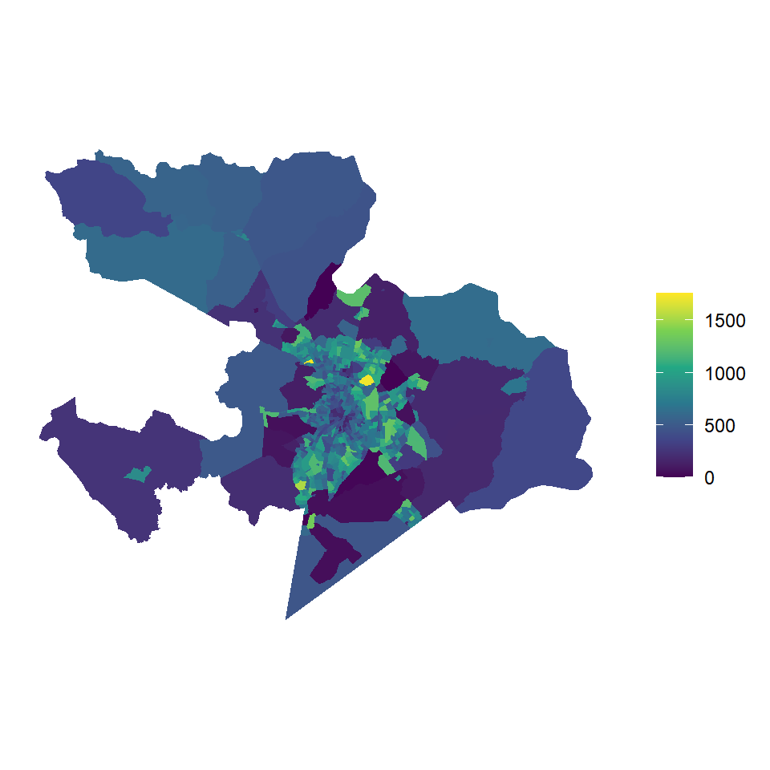
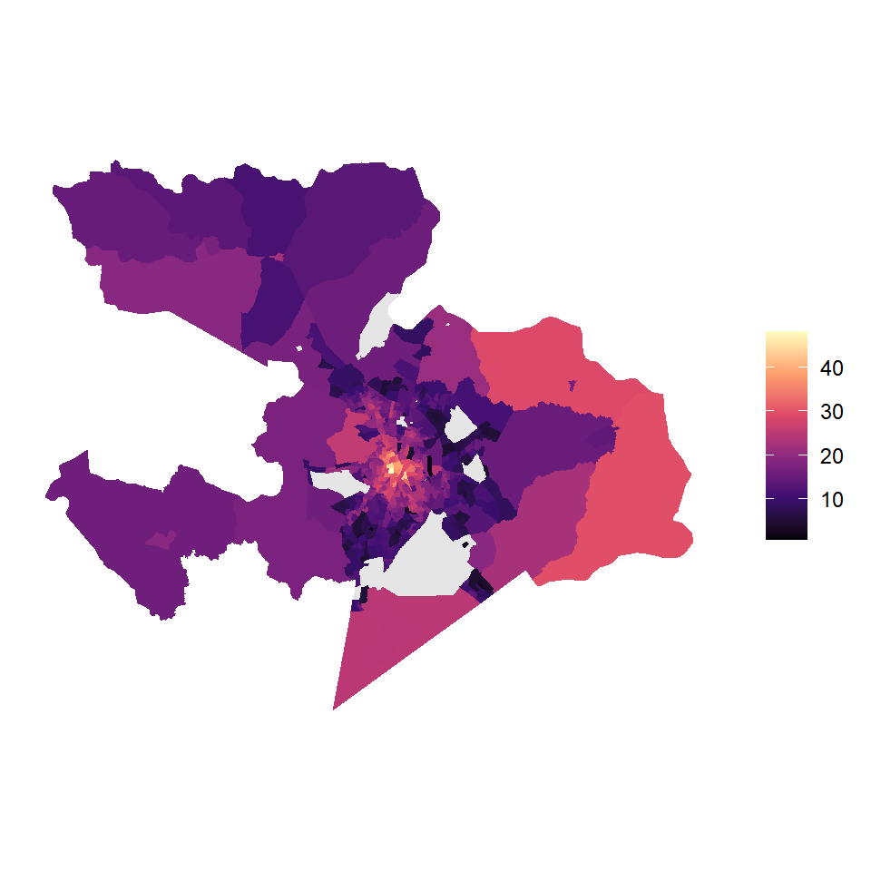
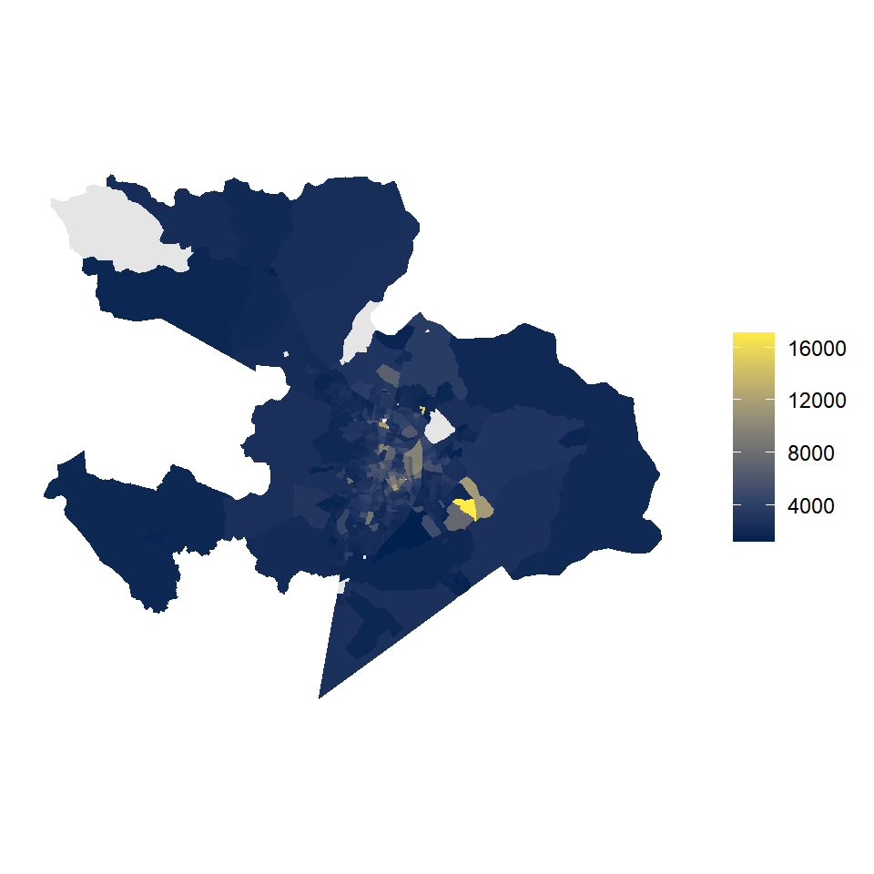
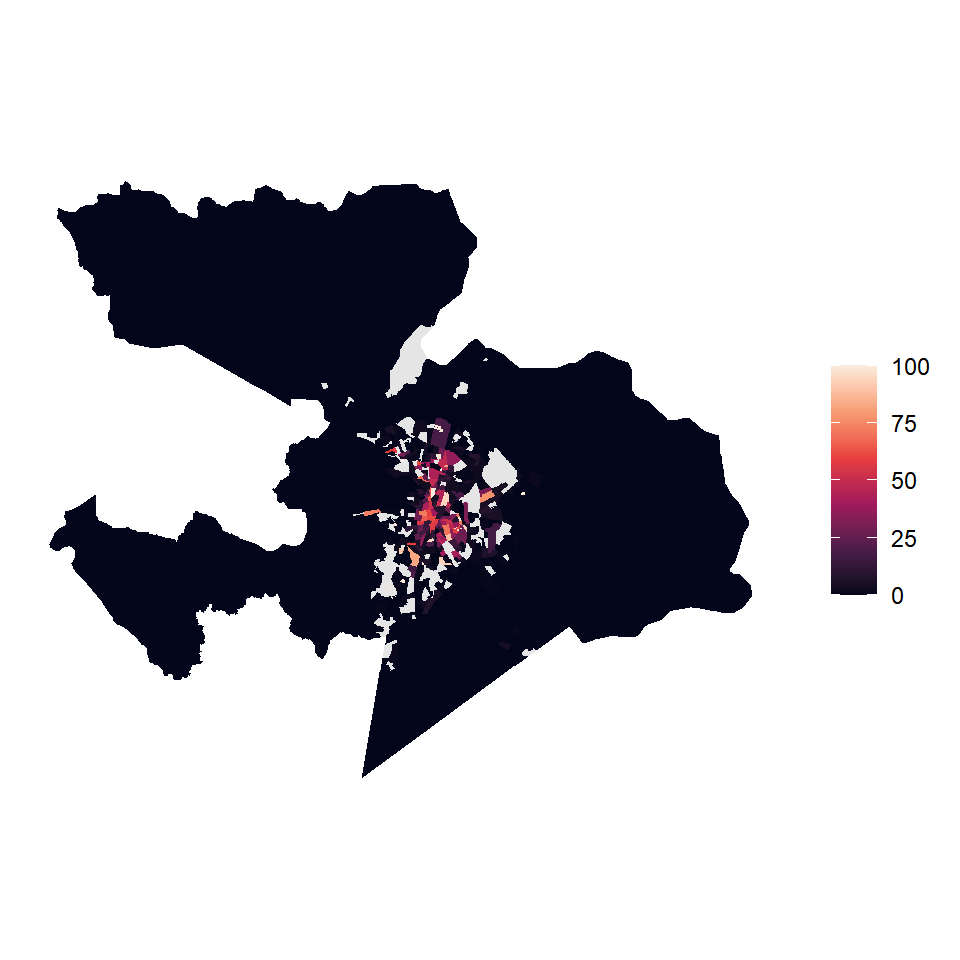
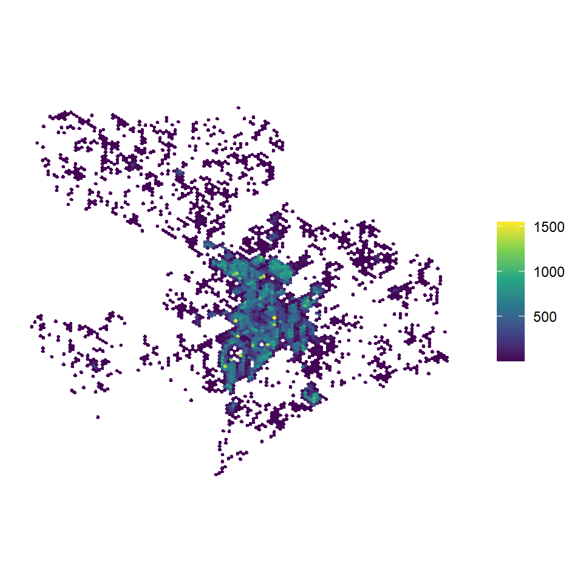
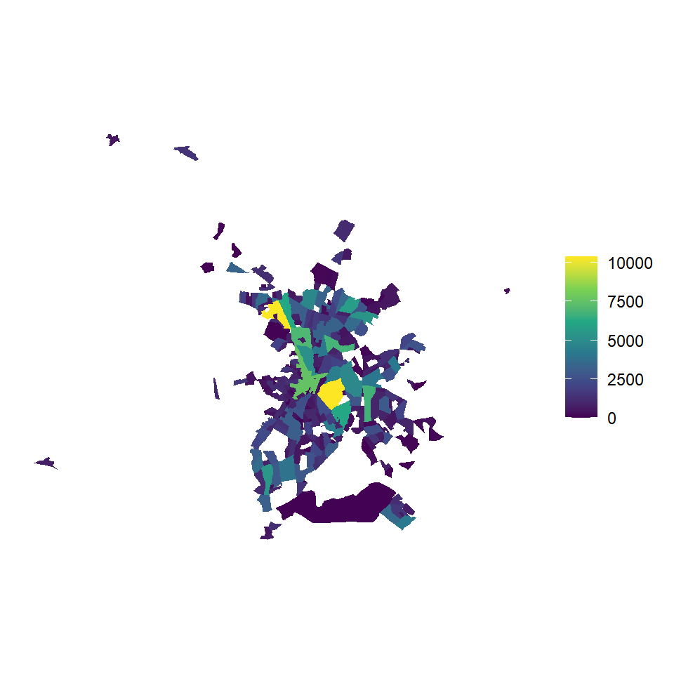

library(censobr)
library(cnefetools)
library(geobr)
library(sf)
library(dplyr)
library(ggplot2)3 Agregados por setor censitário
Quem procura variável de transporte nos Agregados por Setor Censitário não encontra. O questionário básico do Censo, aplicado a todos os domicílios do país, não pergunta sobre viagem, modo de deslocamento ou posse de veículo. Ainda assim, os agregados são um dos insumos mais usados no planejamento de transportes, porque respondem à pergunta que antecede todas as outras, que é onde estão as pessoas e os domicílios e como eles são. Distribuição da população no território, estrutura etária, renda e tipo de moradia são exatamente o que alimenta um modelo de demanda, uma análise de cobertura de rede ou um cálculo de acessibilidade. E vêm na resolução espacial mais fina que o IBGE divulga para o universo, o setor censitário.
NotaNesta seção você vai
- consultar o dicionário de variáveis dos agregados
- ler quatro arquivos temáticos com o
censobre montar uma base única - transformar contagens brutas em indicadores comparáveis entre setores
- mapear os indicadores sobre a malha de setores
- reagregar os dados do Censo para a grade H3 e para os bairros com o
cnefetools - explorar as características do entorno dos domicílios, que é onde o Censo enxerga infraestrutura de transportes
DicaScript deste capítulo
Abra o arquivo scripts/3-agregados.R no projeto da oficina. É nele que vai o código apresentado a seguir. Se ainda não tiver o projeto, volte ao Capítulo 1.
3.1 O que são os agregados
Os Agregados por Setor Censitário são tabelas do universo, apuradas para a totalidade dos domicílios recenseados e divulgadas por setor. Não são amostra, então não têm peso amostral nem intervalo de confiança, e trazem a contagem efetiva. Em troca dessa cobertura completa, o conjunto de perguntas é curto, restrito ao questionário básico.
O conteúdo vem repartido em arquivos temáticos, e é preciso saber em qual deles está cada variável antes de escrever qualquer linha de código. Usaremos quatro. O Basico, com os totais do setor e a identificação geográfica. O Pessoas, com a demografia. O ResponsavelRenda, com a renda da pessoa responsável pelo domicílio. E o Domicilio, com as características da moradia. Mais adiante entra um quinto, o Entorno.
3.2 O dicionário de variáveis
Os nomes das variáveis são códigos sequenciais sem qualquer relação com o conteúdo, do tipo V0001 ou domicilio01_V00049. Consultar o dicionário é, por isso, o primeiro passo obrigatório. O censobr o entrega pela função data_dictionary(), que para o Censo 2022 abre uma planilha no seu computador, com uma aba por arquivo temático.
data_dictionary(year = 2022, dataset = "tracts")
Dica
Deixe a planilha aberta em paralelo enquanto trabalha. Cada aba traz o nome da variável no censobr, o nome original do IBGE e a descrição completa, e é a descrição completa que evita o erro mais comum, que é pegar a variável quase certa. No arquivo Domicilio, por exemplo, existem domicilio01_V00049 e domicilio01_V00086, ambas sobre apartamentos. A primeira conta domicílios do tipo apartamento e a segunda conta os moradores desses apartamentos. Dividir a segunda pelo total de domicílios devolve um número que parece um percentual e não significa nada.
As variáveis deste capítulo são estas.
| Arquivo | Variável | Descrição |
|---|---|---|
| Basico | V0001 |
Total de pessoas |
| Pessoas | demografia_V01040 |
Pessoas de 60 a 69 anos |
| Pessoas | demografia_V01041 |
Pessoas de 70 anos ou mais |
| ResponsavelRenda | V06004 |
Rendimento nominal médio mensal das pessoas responsáveis com rendimento |
| Domicilio | domicilio01_V00001 |
Domicílios particulares permanentes ocupados |
| Domicilio | domicilio01_V00049 |
Domicílios particulares permanentes ocupados do tipo apartamento |
3.3 Leitura dos arquivos e montagem da base
A função read_tracts() recebe o ano e o arquivo temático. Ela devolve uma tabela Arrow, que é uma tabela preguiçosa, no sentido de que nada é lido para a memória enquanto não se chamar collect(). Isso importa porque o arquivo nacional tem centenas de milhares de setores e centenas de colunas. Filtrar o município e selecionar as colunas antes do collect() faz o Arrow ler do disco apenas o pedaço que interessa.
anp_code <- lookup_muni(year = 2022, name_muni = "Anápolis")$code_muni
anp_basico <- read_tracts(year = 2022, dataset = "Basico", showProgress = FALSE) |>
filter(code_muni == anp_code) |>
select(code_tract, situacao, V0001) |>
collect()
anp_pessoas <- read_tracts(year = 2022, dataset = "Pessoas", showProgress = FALSE) |>
filter(code_muni == anp_code) |>
select(code_tract, demografia_V01040, demografia_V01041) |>
collect()
anp_renda <- read_tracts(year = 2022, dataset = "ResponsavelRenda", showProgress = FALSE) |>
filter(code_muni == anp_code) |>
select(code_tract, V06004) |>
collect()
anp_domic <- read_tracts(year = 2022, dataset = "Domicilio", showProgress = FALSE) |>
filter(code_muni == anp_code) |>
select(code_tract, domicilio01_V00001, domicilio01_V00049) |>
collect()
nrow(anp_basico)[1] 593Os quatro arquivos trazem uma linha por setor e compartilham a chave code_tract, o que permite uni-los em sequência. Na mesma passagem construímos os indicadores, porque contagem bruta não se compara entre setores de tamanhos diferentes. A população de 60 anos ou mais vira percentual da população do setor, e os apartamentos viram percentual dos domicílios particulares permanentes ocupados. A renda média do responsável já é uma média e entra como está.
anp_sc <- anp_basico |>
left_join(anp_pessoas, by = "code_tract") |>
left_join(anp_renda, by = "code_tract") |>
left_join(anp_domic, by = "code_tract") |>
rename(
pop = V0001,
p60a69 = demografia_V01040,
p70mais = demografia_V01041,
renda = V06004,
dpp = domicilio01_V00001,
aptos = domicilio01_V00049
) |>
mutate(
perc_60mais = 100 * (p60a69 + p70mais) / na_if(pop, 0),
perc_aptos = 100 * aptos / na_if(dpp, 0)
)
anp_sc |>
select(code_tract, pop, perc_60mais, renda, perc_aptos) |>
head() code_tract pop perc_60mais renda perc_aptos
1 5.201108e+14 212 48.11321 5813.86 65.34653
2 5.201108e+14 188 44.14894 5727.62 72.38095
3 5.201108e+14 354 31.92090 3331.56 52.79503
4 5.201108e+14 301 38.87043 4451.48 60.00000
5 5.201108e+14 242 38.84298 7508.43 39.81481
6 5.201108e+14 197 37.05584 5805.88 61.90476O na_if(pop, 0) evita a divisão por zero. Setor sem morador existe, e sem essa proteção o resultado seria Inf, que estraga a escala de qualquer mapa. Vale conferir os totais do município antes de seguir.
anp_sc |>
summarize(
setores = n(),
populacao = sum(pop, na.rm = TRUE),
perc_60mais = 100 * sum(p60a69 + p70mais, na.rm = TRUE) / sum(pop, na.rm = TRUE),
domicilios = sum(dpp, na.rm = TRUE),
perc_aptos = 100 * sum(aptos, na.rm = TRUE) / sum(dpp, na.rm = TRUE)
) setores populacao perc_60mais domicilios perc_aptos
1 593 398869 14.11491 142325 11.761113.4 Mapeando os indicadores
Os agregados vêm sem geometria, então precisamos da malha de setores do geobr, exatamente como no Capítulo 2. A junção é pela coluna code_tract, e é direta, porque os dois pacotes entregam o código como número.
anp_sc_geo22 <- read_census_tract(code_tract = anp_code, year = 2022,
simplified = FALSE, showProgress = FALSE)
anp_sc_map <- anp_sc_geo22 |>
select(code_tract) |>
left_join(anp_sc, by = "code_tract")
sum(is.na(anp_sc_map$pop))[1] 0Como os setores rurais são enormes e quase vazios, o mapa do município inteiro é dominado por eles. Vale acompanhar os quatro painéis lembrando que a mancha densa no centro é a área urbana.
mapa_base <- function(dados, variavel, paleta) {
ggplot(dados) +
geom_sf(aes(fill = .data[[variavel]]), color = NA) +
scale_fill_viridis_c(option = paleta, na.value = "gray90", name = NULL) +
theme_minimal() +
theme(axis.text = element_blank(), panel.grid = element_blank())
}
mapa_base(anp_sc_map, "pop", "viridis")
mapa_base(anp_sc_map, "perc_60mais", "magma")
mapa_base(anp_sc_map, "renda", "cividis")
mapa_base(anp_sc_map, "perc_aptos", "rocket")



A leitura conjunta dos quatro painéis já sugere as perguntas de transporte. A população se concentra em uma mancha contínua, e é sobre ela que qualquer rede de transporte coletivo precisa se apoiar. Os setores com maior proporção de idosos não coincidem necessariamente com os de maior renda, o que importa porque idade e renda puxam a demanda por transporte em direções diferentes. E os apartamentos se concentram em poucos setores, indicando onde a densidade construída comporta frequências maiores de atendimento.
3.5 Reagregando para outros recortes com o cnefetools
O setor censitário é a unidade de divulgação, e raramente é a unidade de análise que se quer. Ele muda de desenho a cada censo, tem tamanhos muito desiguais e não coincide com bairro, com zona de tráfego nem com célula de grade. Levar o dado do setor para outro polígono exige interpolação, e a dificuldade está em que a população não se distribui de forma uniforme dentro do setor.
O pacote cnefetools resolve isso usando o CNEFE como referência. Em vez de repartir a população do setor pela área, ele a reparte pelos endereços efetivamente cadastrados, que é uma aproximação bem melhor de onde as pessoas estão. As duas funções que usaremos seguem a mesma lógica e diferem apenas no destino. O argumento vars aceita um conjunto fixo de variáveis já preparadas pelo pacote, e usaremos duas, pop_ph, população em domicílios particulares, e avg_inc_resp, rendimento médio do responsável.
3.5.1 Grade hexagonal H3
tracts_to_h3() gera as células H3 que cobrem o município e distribui as variáveis nelas. A resolução 9, apresentada no Capítulo 2, é a que a Parte 2 consome.
anp_h3 <- tracts_to_h3(
code_muni = anp_code,
year = 2022,
h3_resolution = 9,
vars = c("pop_ph", "avg_inc_resp"),
verbose = FALSE
)
nrow(anp_h3)[1] 84403.5.2 Bairros
tracts_to_polygon() faz o mesmo para qualquer camada de polígonos que você fornecer. O caso dos bairros é o mais instrutivo, porque as fronteiras de bairro cortam setores ao meio, situação em que uma junção espacial simples erraria feio. A malha de bairros de Anápolis não está no geobr, e vem da prefeitura, já preparada em dados/geo/.
anp_bairros <- st_read("dados/geo/bairros_anapolis.gpkg", quiet = TRUE)
anp_bairros_pop <- tracts_to_polygon(
code_muni = anp_code,
polygon = anp_bairros,
year = 2022,
vars = c("pop_ph", "avg_inc_resp"),
verbose = FALSE
)
nrow(anp_bairros_pop)[1] 292mapa_base(filter(anp_h3, pop_ph > 0), "pop_ph", "viridis")
mapa_base(anp_bairros_pop, "pop_ph", "viridis")

Aviso
A camada de bairros cobre apenas a área urbana de Anápolis, e por isso não captura toda a população do município. O tracts_to_polygon() informa essa cobertura na saída, e vale sempre conferir a soma da população reagregada contra o total do município antes de usar o resultado. Perder gente na borda é o erro silencioso mais comum em interpolação.
3.6 O entorno dos domicílios
Falta tratar do único produto do Censo que descreve infraestrutura de transportes de forma direta. O levantamento das características urbanísticas do entorno dos domicílios registra, por observação do recenseador na face de quadra, a presença ou a ausência de itens como pavimentação, calçada, rampa para cadeirante, ponto de ônibus e sinalização para bicicleta. Ele é divulgado como mais um arquivo temático dos agregados, o Entorno, e por isso cabe neste capítulo.
Usamos o bloco de domicílios do arquivo, e não o de faces de quadra, porque contar faces mede extensão de via, enquanto contar domicílios mede quantas moradias estão diante de cada situação, que é o que interessa quando a pergunta é sobre pessoas.
anp_entorno <- read_tracts(year = 2022, dataset = "Entorno", showProgress = FALSE) |>
filter(code_muni == anp_code) |>
select(code_tract,
domicilios_V05000,
num_range("domicilios_V050", c(6, 15, 18, 21, 27), width = 2)) |>
collect()
nrow(anp_entorno)[1] 563Repare que vieram menos setores do que os do arquivo Básico. O entorno não é pesquisado em todo setor, então a primeira providência é medir o quanto ele cobre do município. O denominador de todos os indicadores é domicilios_V05000, o total de domicílios com entorno pesquisado, e não o total de domicílios do setor.
tibble(
setores_basico = nrow(anp_basico),
setores_entorno = nrow(anp_entorno),
dom_ocupados = sum(anp_sc$dpp, na.rm = TRUE),
dom_investigados = sum(anp_entorno$domicilios_V05000, na.rm = TRUE)
) |>
mutate(cobertura = 100 * dom_investigados / dom_ocupados)# A tibble: 1 × 5
setores_basico setores_entorno dom_ocupados dom_investigados cobertura
<int> <int> <dbl> <dbl> <dbl>
1 593 563 142325 139667 98.1A cobertura é alta, o que dá segurança à leitura. Municípios com forte presença rural apresentam cobertura bem menor, e a verificação deve ser refeita a cada caso.
totais <- anp_entorno |>
summarize(across(starts_with("domicilios_"), \(x) sum(x, na.rm = TRUE)))
tibble(
Item = c("Via pavimentada", "Ponto de ônibus ou van",
"Via sinalizada para bicicleta", "Calçada", "Rampa para cadeirante"),
Sim = c(totais$domicilios_V05006, totais$domicilios_V05015,
totais$domicilios_V05018, totais$domicilios_V05021,
totais$domicilios_V05027),
Denominador = c(rep(totais$domicilios_V05000, 4), totais$domicilios_V05021)
) |>
mutate(`% com o item` = 100 * Sim / Denominador) |>
knitr::kable(digits = 1, format.args = list(big.mark = ".", decimal.mark = ","))| Item | Sim | Denominador | % com o item |
|---|---|---|---|
| Via pavimentada | 138.079 | 139.667 | 98,9 |
| Ponto de ônibus ou van | 17.372 | 139.667 | 12,4 |
| Via sinalizada para bicicleta | 676 | 139.667 | 0,5 |
| Calçada | 136.502 | 139.667 | 97,7 |
| Rampa para cadeirante | 20.072 | 136.502 | 14,7 |
O retrato é o de uma cidade construída para o automóvel. A pavimentação está praticamente universalizada e a calçada acompanha, o que já distingue Anápolis de boa parte dos municípios brasileiros. O que falta aparece nos outros três itens. A rampa para cadeirante existe em uma fração pequena das calçadas, o que interdita a viagem a pé de quem usa cadeira de rodas mesmo onde há por onde andar. O ponto de ônibus alcança pouco mais de um décimo dos domicílios. E a sinalização para bicicleta é residual, abaixo de um por cento.
Note que a rampa usa denominador próprio. O questionário só pergunta por rampa nas faces em que existe calçada, então dividir pelo total de domicílios investigados jogaria no denominador quem nunca teve chance de aparecer no numerador, misturando duas carências distintas, a de não ter calçada e a de ter calçada sem rampa.
AvisoPonto de ônibus na face não é o mesmo que acesso ao transporte
O quesito identifica sinalização visível de parada na face percorrida, na face confrontante e no canteiro central (IBGE, 2025). Basta a sinalização em qualquer dos dois lados da rua, e nada é observado fora desse trecho, de modo que um ponto na esquina seguinte, a poucos minutos de caminhada, não entra na conta daquela face. O indicador é um bom primeiro indício, disponível para todo o país e comparável entre municípios, e não uma medida de cobertura do transporte coletivo. Medir acesso ao transporte exige saber quais linhas passam por cada ponto e com que frequência, que é justamente o que a Parte 2 fará com o GTFS.
Com os agregados tratados, temos população, estrutura etária, renda e tipo de moradia por setor, e já sabemos levá-los para a grade H3 e para os bairros. O próximo capítulo passa aos microdados da amostra, onde o questionário é longo e as perguntas sobre deslocamento finalmente aparecem.